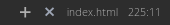
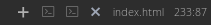
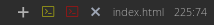

Comment améliorer votre Atom
Tout se passe dans les paramétres d'atom lui même.
Pour accéder au panneau de configuration, deux solutions :
- En passant par le menu : Edit > Preferences
- En utilisant le raccourci clavier : ctrl + ,
Soft Wrap
Dans l'onglet "Editor", vous trouverez le paramétre "Soft Wrap".


Thèmes
Dans atom et la plupart des editeurs de code, les thèmes sont composés de deux modules, l'interface et la syntaxe.
A noté que le module syntaxe comprends aussi bien la syntaxe(le texte) que le fond de l'éditeur étant donné qu'ils sont complémentaires.
Il n'y a pas de thème particulier recommandé, il s'agit des préférences de chacun. Préférez quand même des thèmes qui rendent le tout facilement lisible.
Les thèmes peuvent être téléchargés depuis atom dans l'onglet "Install. "
A droite du champ de recherche, choisissez "Themes " au lieu de "Packages ".
Ensuite entrez les mots clés définissants le genre de thèmes que vous souhaitez installer.

Cliquez sur "Install " à droite du thème pour l'installer.

Une fois l'installation terminée, vous pourrez l'appliquer dans l'onglet "Themes ".

Ici il s'agit d'un thème pour la syntaxe mais la marche à suivre pour un thème d'interface est exactement le même.
A noter qu'Atom sera gelé durant l'application du thème.
Les paquets
Plus courrament appellés plugins, extensions, addons ou encore greffons, ce sont des fonctionnalitées qui s'ajoutent au logiciel.Installation
Direction l'onglet "Install". C'est ici que vous trouverez tout les paquets à installer et désinstaller. La configuration se fera dans l'onglet "Packages" pour des raisons pratiques.Pour installer un paquet, rien de plus simple, entrez dans le champ de recherche ce que vous voulez installer.
Placez votre curseur sur le bouton "Install", pressez le clic gauche de la souris et voila, après un long moment (variable selon le paquet), le paquet est installé et prêt à être utilisé dans sa configuration de base.

Gestion
Pour accéder aux paquets installés, il faut aller dans l'onglet "Packages".Utilisez la barre de recherche pour trouver rapidement le paquet que vous voulez gérer.
Cherchez un paquet, par exemple, autosave. Vous tombez sur un résultat et avez la possibilité de le désactiver (boutton "disable") ou d'accéder à ses préférences (boutton "settings").
Paquets utiles
autosave
Le paquet autosave permet de sauvegarder vos fichiers automatiquement lorsque vous changez de fenêtre. C'est aussi valable pour le changement d'onglet.Très pratique pour ceux qui ont l'habitude de travailler sur des éditeurs qui sauvegardent instantanément chaque modifications et à double tranchant pour ceux qui ont l'habitude de sauvegarder à la mano comme dans le temps.
Malgrès le fait que ce soit un paquet natif de l'éditeur, il n'est pas activé par défaut. Il faut donc aller l'activer dans ses paramétres.
w3c-validation
Ce paquet est tout simplement l'intégration dans atom du validateur html/css w3c officiel. Il nécessite une connection internet étant donné qu'il ne fait qu'envoyer le fichier aux serveurs de validations w3c (les mêmes que vous utilisez quand vous validez sur le site du w3c), ce qui peux provoquer une latence plus ou moins importante selon les connections.
Paramétres utiles- Hide on no errors : Permet de cacher le panneau d'erreurs si il n'y en a pas.
- Use fold mode as default : Garde le panneau d'affichage des erreurs réduit.
- Validate on change : Lance la validation dès le moindre ajout ou suppréssion d'un caractére. (Déconseillé)
- Validate on save : Lance la validation lors de la sauvegarde du fichier.
emmet
Emmet permet de produire rapidement du code html en utilisant une syntaxe simple à prendre en main.
Plus d'information sur le site officiel.
Pour transformer la syntaxe emmet en code html, utilisez la touche de tabulation ou la combinaison de touche ctrl + e.
div.container>div.row*2>div.col-sm-12.col-md-6*2
Produira le code html suivant
<div class="container">
<div class="row">
<div class="col-sm-12 col-md-6"></div>
<div class="col-sm-12 col-md-6"></div>
</div>
<div class="row">
<div class="col-sm-12 col-md-6"></div>
<div class="col-sm-12 col-md-6"></div>
</div>
color-picker
Tout simplement un sélecteur de couleurs gérant la transparence sous 5 formats différents.
- Placez le curseur à l'endroit où insérer la valeur de la couleur
- Ouvrez le color picker par le menu contextuel du clic droit de la souris (menu "Color Picker") ou avec le racourci clavier ctrl + alt + c
- Choisissez la couleur désirée
- Validez avec la touche entré
- Abbreviate Color Values : Permet de réduire la taille textuelle de la valeur de la couleur.
- Preferred Color Format : Définit le format qui sera proposé à l'ouverture du sélecteur de couleurs.
- Uppercase Color Values : Utilise des majuscules pour les valeurs hexadécimales.
atom-bracket-highlight
La seule chose que fait ce paquet est de mettre en valeur les balises, les parenthéses, les crochets et les accolades pour une meilleure visibilité.
file-icons
Ajoute des icônes colorées à côté des noms de fichiers. Permet d'identifier le type des fichiers plus facilement.
atom-beautify
Ce paquet est très important, il permet de réindenter tout le code du fichier courrant simplement en pressant le raccourci clavier ctrl + alt + b. Une multitude de langages sont supportés.
Paramétres utiles-
HTML
- Indent inner html : Permet d'également indenter les balises head et body pour ne pas être au niveau de la balsie html. Ce paramétre doit bien évidement être coché.
javascript-snippets
Ajoute des raccourcis javascript à l'auto complétion.
Par exemple :
Tapez "gi" et sur la touche entrée vous donnerez "document.getElementById('id');"
Et "cl" donnera "console.log(obj);"
platformio-ide-terminal
Ce paquet permet d'intégrer un shell à atom. Par défaut les terminaux s'ouvriront dans le dossier du projet actuel.
Pour ouvrir un terminale, cliquez sur le + dans le coin inférieur gauche d'atom.

Tout les terminaux ouverts s'afficheront à la suite de ce +.

Vous pouvez changer la couleur de l'icône de chaque terminaux avec un clic droit sur leur icône.

- Close Terminal on Exit : Ferme le terminale si le shell quitte. Cochez ce paramétre.